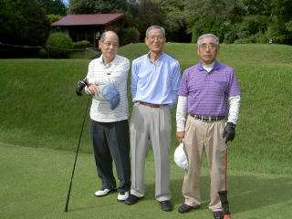
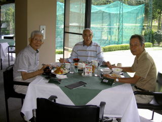

| 横浜国立大学工学部第四寮 |
第１１回弘南寮ゴルフ大会
時 ： 平成２４年１０月９日（火）
所 ： 小田原湯本カントリークラブ
| 第１１回大会は当初、平成２４年４月２７日（金）利根パークゴルフ場で開催が予定されていましたが、雨のため延期となり、やっと本日開催の運びとなった。 野村安広、野村慎一、両野村幹事さん、ご苦労様でした。 このゴルフ会立ち上げメンバーであり、初回以来毎回出席されていた嵐雅彦さんが、誠に残念ながら去る７月２８日（土）亡くなられました。 今回は追悼大会として、スタートに先立ち全員で黙祷を捧げ、また終了後の反省会でも夫々思い出話、エピソード等々の披露がありました。 謹んでご冥福を祈る次第です。 |
| 前列左から： 野村安広 ３７年建築 高石周志 ３６年電工 野村慎一 ４０年電工 後列左から： 安岡慶和 ４０年機械 猪原暉雄 ３７年造船 外池久雄 ４０年建築 山之内克彦 ３４年機械 伊勢本幸雄 ３５年造船 高橋千穐 ３７年応化 |
| 第１組 野村（安） 山之内 伊勢本 | 第２組 高橋 高石 猪原 |
第３組 安岡 外池 野村（慎） |
|  | ||
スタート風景
昼食風景
| 第１組 | 第２組 | 第３組 |
|  |
成績発表 ＆ 表彰式 （敬称略）
優勝 伊勢本幸雄 ４８−４２＝ ９０ −１９＝７１．０
準優勝 野村慎一 ４７−４４＝ ９１ −２０＝７１．０
ＢＧ 野村安広 ４１−４４＝ ８５
尚、次回は、伊勢本さんと稲田さんの幹事のもと、来年４月２６日（金）開催される予定です。
場所については伊勢本幹事から、総丘カントリーの名前が出ておりますが、追って両幹事から
決定発表される筈です。
因みに、今回のブービー 及び ブービーメーカーの成績は
５５−５７＝１１２ −２３＝８９
６１−６３＝１２４ −３３＝９１ でした。
この程度で頑張っていますので、それならワシもと思われる方々、大勢おられる筈。
次回は是非大挙してご参加下さる様期待しています。